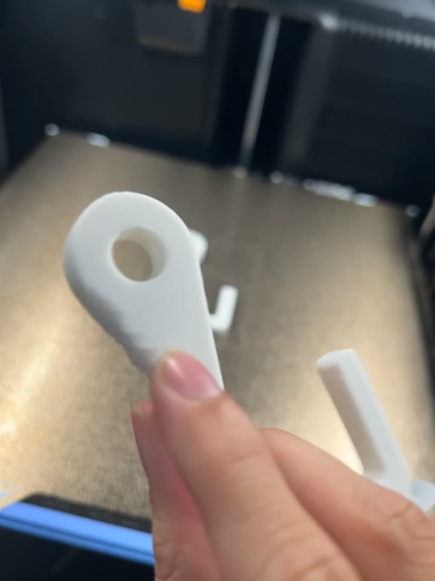
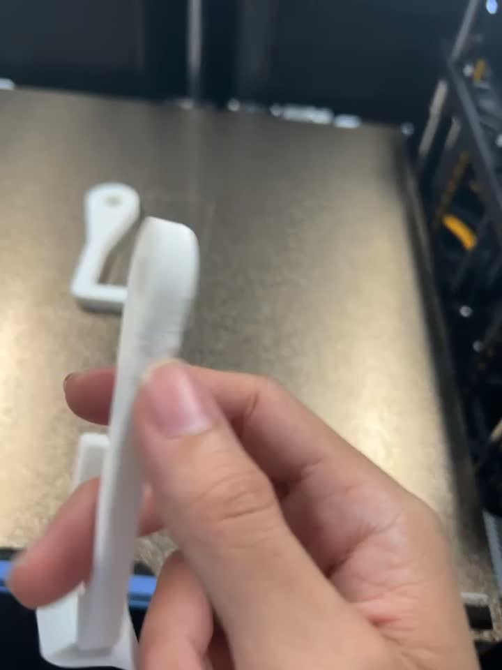

My print farm
Bambu H2C with AMS — functional parts in engineering materials.
Automation, robotics and industrial systems — from PLC wiring and CNC to AI tooling I built myself. I like problems where the design has to work on a real machine.

Top 3 of 12 teams, chosen after Delta's PLC / HMI / inverter training and a final pitch.
Brief: make real, usable systems with PLC, inverter, servo and HMI. Our answer: upgrade an existing machine so operators switch product recipes without a shutdown or pulling parts off.
The core idea: a recipe change on the HMI, interlocks, and the servo-driven switch — in 60 s.
The whole filling line, zone by zone, in a Unity digital twin.
PLC, HMI (DOP-100WS), inverter, motor and servos — how they connect.
Founder & operator since Sep 2026 — I model parts that have no CAD file, choose the material, print on a Bambu H2C and ship.
Bambu H2C with AMS — functional parts in engineering materials.

Modeled from the customer's measurements; printed upright for strength.

Part chosen for strength, heat and use — not just "whatever filament is loaded".
Behind it: a quoting site (cost & profit), AI auto-reply chat, auto-PR posting and a purchasing workflow I built.
Newest first.
Fusion 360 CAD/CAM, G-code posting, machine setup and part inspection. 75-hr CAD-CAM/CNC certification (Phra Nakhon Polytechnic College, 2023).

Planned the architecture before coding. Switched from a ROS2 plan to a behavior tree to hit the deadline. Fought real gear backlash and tuned PID on a mecanum drive — and kept the project moving when team attendance dropped.
Designed a game-based tool that makes post-therapy exercise fun for stroke patients, from the organizers' patient research. Learned Unity — the same engine used for industrial digital twins.
On-site with engineers: PLC panel wiring and mechanical assembly — learning by doing the real work.

Electronics lab, PID control and debugging real-vs-simulated behaviour, Siemens PLC labs (CNC and tank-level control), self-balancing robot and a line-following robot with path memory (ESP32).
Not just chat: Claude Code drives my CAD, simulation, video and shop systems. Samples below were made this way.
Teaching clip I generate with Manim + Claude to explain armature winding and the two magnetic fields.
One clip per concept, layout-checked frame by frame before it ships.
Hook modeled and printed for the shop — dimensions checked against the customer's measurements.
A skill (manim-teaching-video) with my rendering rules, layout linter and frame checks, so every clip comes out consistent.
Reusable skills for CAD, quoting, ad videos, calibration; delegated to sub-agents and other models (Gemini, Codex).
Claude controls Fusion 360, Blender, Unity, Siemens TIA Portal and PLCSIM through MCP servers.
Auto-reply chat, slicing-based quotes, FlowAccount drafts, purchasing, and a self-hosted order site.
A local mind-map and notes app I built, with a voice interface and a bridge so Claude can read and act on my notes.
Scheduled workflows for content and ads; Python, Node and cloud GPU jobs (Kaggle, Colab) for heavy renders.
Delta PLC, HMI, servo & inverter; Siemens PLC; Ladder Logic
ROS2, behavior trees, PID, mecanum drive, encoder / gyro / IR / ultrasonic
Fusion 360, CNC turning & milling, G-code, 3D printing
n8n, AI auto-reply, multi-API integration, Claude Code
Python, C, Lua, Arduino, ESP32, HTML, JavaScript, CSS
Unity, Gazebo (beginner)